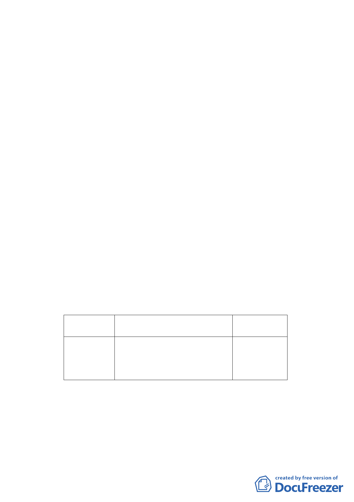

公尺，計畫拓寬道路寬度為40公尺，變更面積合計約3.04公
頃。
二、 計畫緣起與目的：
為創造社子島開發交通運輸之有利條件，臺北市政府業
辦理「社子大橋新建工程」，計畫經由北投區第13 號道路
跨越基隆河連接社子島l－1號道路，為拓寬北投地13號道
路，變更原計畫道路兩側綠地道路用地。
前案經臺北市都市計畫委員會97年9月30日第586次委
員會議審議通過復於98年2月20日府都規字第09800330500
號公告發布實施之「變更臺北市北投區第 13 號道路兩側綠
地用地為道路用地（配合社子大橋新建工程）主要計畫案」，
該都市計畫書內私有土地之取得方式為「徵收」。
惟臺北市議會第10屆第7次定期大會臨時提案：「關於
本市第一期公共設施保留地北投13、15號路及138、139號綠
地工程徵收爭議事，市府應依民國78年協議事項辦理。」為
使計畫與施政前後一致性，擬修訂98年都市計畫書內私有土
地之取得方式，爰依都市計畫法第 27 條第 1 項第 4 款規
定提出本都市計畫修訂案。
三、 變更主要計畫內容：
原私有土地
之取得方式
徵收
新計畫私有土地之取得方式
本事業用地開發採一般徵收方
式為原則，惟如土地所有權人
願意先行提供使用，則將併關
渡平原整體開發方式辦理。
變更理由
為使與本府
78年協議前
後一致
四、 實施進度及經費：
經費由臺北市政府工務局新建工程處編列預算支應，預
定103年完成。
五、 全案係市府101年10月31日府都規字第10137110700號公告
公開展覽並函送到會。
-3-